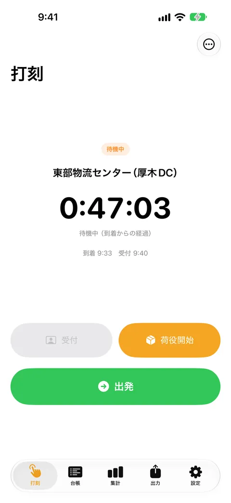
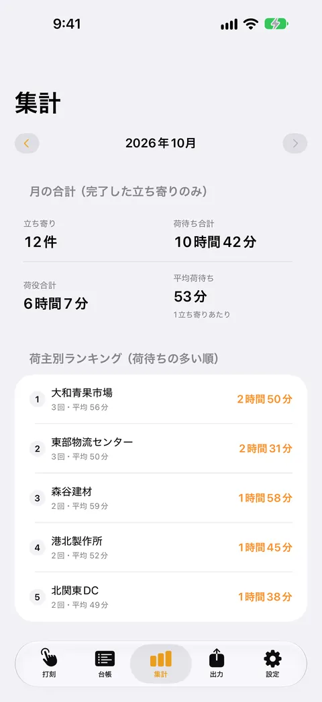
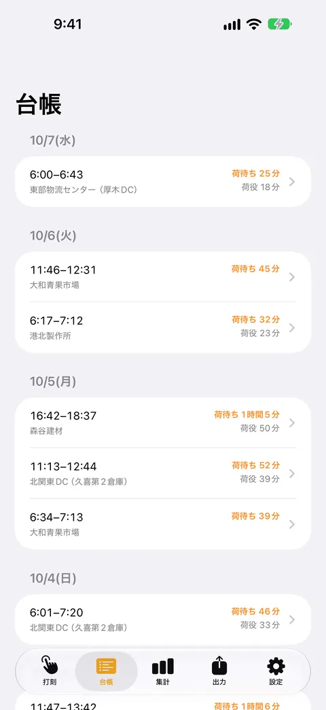
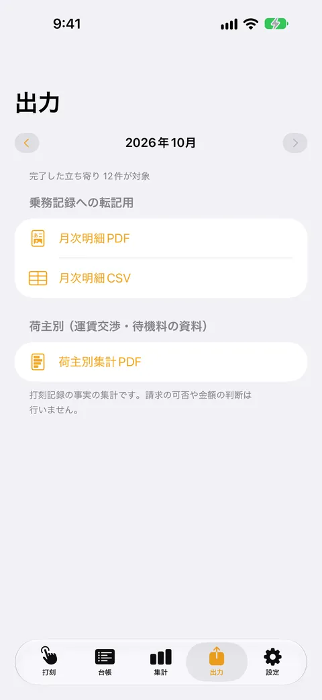

荷待ちタイマー
乗務記録の手書き転記をなくす
到着・受付・荷役開始・出発をワンタップで打刻するだけで、荷待ちと荷役の時間が自動で計算されます。直近30日の台帳と当月の合計は無料。買い切りProで、全期間の履歴・荷主別の集計・PDF/CSV出力が使えます。




荷待ちタイマーは、トラックドライバーが荷主先での荷待ち・荷役の時間を、待っている間にワンタップで記録するアプリです。乗務記録に書き写すための月次の明細を、PDFとCSVで出せます。
こんなときに
荷主先で待たされた時間を、乗務記録の荷待ち欄に手書きで転記している。会社への報告や運賃の相談のために、荷主ごとの待ち時間を残しておきたい。
できること
- 到着・受付・荷役開始・出発をワンタップで打刻します。荷待ちと荷役の時間は自動で計算され、待機中は経過時間が大きく表示されます
- 荷主名・積み/卸しの区分・附帯作業の内容・メモを記録できます
- 日ごとの台帳で履歴を見られます。打刻を忘れたときは、あとから時刻を直せます。直した記録には「修正あり」と表示されます
- 月ごとの荷待ち・荷役の合計と、荷主別のランキングを見られます
- 乗務記録に転記するための月次明細（PDF・CSV）と、荷主別の集計（PDF）を出力できます
無料で使える範囲
打刻、直近30日の台帳、当月の合計は無料です。買い切りPro（¥730）では、全期間の履歴、荷主別の集計、過去月の集計、PDF/CSV出力が使えます。30日より前の記録も削除されず端末内に残り、購入すると閲覧できるようになります。月額課金はありません。
安心について
記録はすべて端末の中だけに保存されます。外部のサーバーへ送信されることはなく、会員登録も不要です。位置情報は、到着を打刻した瞬間の1点だけを記録します（「使用中のみ許可」。移動の追跡やバックグラウンドでの取得はしません）。位置情報を許可しなくても、打刻と記録は使えます。
本アプリは記録と帳票化のためのツールです。待機時間料を請求できるかどうかなど、法的な判断や助言は行いません。カーナビやルート案内、運転日報のすべての機能を持つアプリではありません。